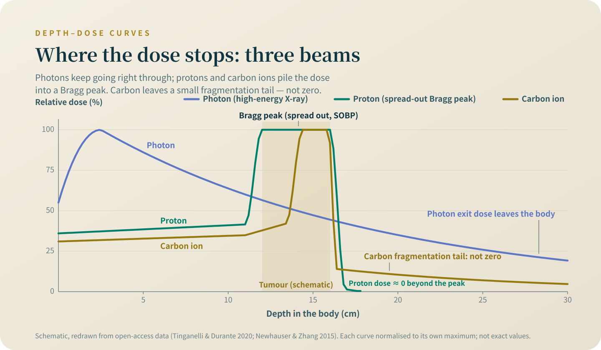

New does not mean better
The four new radiotherapies are four different axes, not four marks on one ruler. Here are the evidence ladder, five tests, and how to hear whether you are in a consultation or a sale.
Most people who open this topic have finished standard treatment, can no longer stay on it, or are searching everywhere on behalf of someone in the family. The first article introduces no treatment at all — it hands you a ruler first, because at your most vulnerable, a way of judging matters more than news.
Warning 1 (what this displaces): Most of the treatments in this topic are paid out of pocket, and most sit outside standard treatment. Before you decide, you need to know that what they displace is usually not time but three things of real value: standard treatment you have not yet used up, money you will need for later lines, and your eligibility for clinical trials (many trials exclude people who have recently received other experimental treatments). And there is one more, harder to see — physical reserve. The strength burnt through in a course that does not work may no longer be there when a genuinely useful option appears. So the question is not whether this is worth trying — it is what you give up by doing it.
Reading this topic takes about an hour; each decision it discusses routinely puts at stake savings of hundreds of thousands or millions of NT dollars, and a clinical-trial entry ticket you may not get back.
Warning 2 (finding the right doctor): Do not make this kind of decision alone, and do not make it on the word of the person offering the treatment. The doctor you are looking for is one willing to tell you "this is not right for you" — if they never once say who this is NOT for, that is not a consultation, it is a sale.
My position first: proton therapy and hyperthermia are both technologies within my own field, and the hospital I work at has the equipment for them. So I draw every line in this topic tighter, not looser.
Precise, heavy, fast, clever — four different axes, not four marks on one ruler
What proton therapy changes is where the dose stops: the beam travels to the depth of the tumour and stops there, so the normal tissue behind it takes less of a beating — "precise"; see "Protons: precise. Then what?". What carbon-ion therapy changes is what happens on arrival: it stops at a set point in the same way, but the pattern of damage done at the end point is different — "heavy", and heavy does not mean better; see "Carbon ions: heavier is not better". What FLASH changes is how fast the dose is delivered: the whole dose in an instant, betting that normal tissue and tumour respond differently to speed — "fast"; see "FLASH: radiotherapy in under a second, still in phase 1". What BNCT changes is how the target gets picked: get tumour cells to take up boron first, then set it off with neutrons, so the selectivity is built at the level of the cell — "clever"; see "BNCT: the radiotherapy that does not aim". Precise, heavy, fast, clever are four different axes, not four marks on the same ruler; a ranking such as "carbon ions beat protons, protons beat photons" goes wrong at the very first step.

The ladder of evidence, and the tuition this field has paid
Evidence is a ladder: cell and animal experiments, phase 1 safety trials, patient series with no comparison group, and at the top the randomised comparative trial — patients assigned by lot into two groups and the outcomes compared directly. The four technologies each stand on a different rung, and the standing order is itself information. Why do randomised comparisons matter so much? Because this field has been slapped in the face — more than once.
RTOG 0617: inoperable stage III lung cancer, randomised between 60 Gy and 74 Gy. "More dose, more kill" makes sense physically; the result was a median survival (the time half of the patients live beyond) of 20.3 months in the high-dose group against 28.7 months on the standard dose — the extra dose left patients living shorter lives (hazard ratio 1.38, 95% confidence interval 1.09–1.76; a hazard ratio is the ratio between the rates at which events occur in two groups, and a confidence interval is the range across which the estimate can reasonably swing)[1]. RTOG 0126: more than 1,500 men with intermediate-risk prostate cancer; the higher dose pushed the eight-year blood-test recurrence signal down from 35% to 20%, yet overall survival was 76% against 75%, with more side effects[2]. The third example is protons themselves: in the randomised lung-cancer comparison, heart dose in the proton arm was lower throughout — the dose maps really were prettier — yet that bought nothing clinically[3]. The full trial record is in "Protons: precise. Then what?"; that was a single trial, older technique, a single cancer type, and it cannot be read as "protons don't work". All it can prove is this: a prettier dose map is not a better outcome. This field has paid tuition to learn that, which is why "the mechanism makes sense" is, with me, where a hypothesis starts — not proof that a treatment works.
Warning 1 is not there to frighten you: money, eligibility, strength — the evidence for each
Every sentence in the warning at the top has something behind it. Money first: in a nationally representative American sample, 28.4% of cancer survivors aged 18 to 64 had borrowed money, gone bankrupt, been unable to pay medical bills, or made some other major financial sacrifice because of their cancer[4]; another study linked a cancer registry to bankruptcy records: patients who filed for bankruptcy had 1.79 times the mortality risk of matched controls (95% confidence interval 1.64–1.96)[5] — observational data, which can say "associated" and no more; it cannot be read as spending money killing people. Both are American numbers, and the out-of-pocket structure is different from Taiwan's; I could not find a representative Taiwanese study, and I am not going to invent a Taiwanese number for you.
Then the trial-eligibility gate. Large trials routinely exclude, in writing, people who have recently received experimental treatment: KEYNOTE-048 in head and neck cancer states that anyone who used an "investigational agent or device within 4 weeks before the first dose" cannot enrol[6]; ASCO and Friends of Cancer Research have published recommendations urging trials to stop excluding this way — and the existence of that recommendation is itself evidence of how widespread the practice is[7]. Provisions and time windows differ from trial to trial — this is not "once done, shut out forever"; it is a door temporarily closed, and how long it stays closed depends on the protocol; before applying, hand your complete treatment list to the trial team and let them judge. As for physical reserve, I attach no citation — every oncologist has seen it: the strength and organ reserve used up in a course that does not work are not refunded.
Five tests for hearing whether you are in a consultation or a sale
Warning 2, made operational, is five tests. One: have they ever said, even once, who this is not right for — a doctor who has genuinely used this technology has seen patients it did not suit. Two: when you ask "is there a randomised comparative trial", do they answer the question, or turn to the mechanism — and what a pretty mechanism is worth, the last section has already covered. Three: do they bring up clinical trials unprompted. Four: do they work the displacement out with you — once the money is paid, can you still afford later-line treatment and trial co-payments. Five: how much does what they recommend overlap with what they themselves perform, and what their unit charges for. The five are not for interrogating anyone on the spot; they are your checklist for going back over it once you have left the consulting room.
![Evidence ladder from bottom to top: cell and animal studies, phase I safety, single-arm series, randomised trials, routine care and reimbursement. FLASH sits at phase I (about 30 patients worldwide); carbon-ion therapy at single-arm series (its only randomised readout is a safety trial versus protons, no difference); BNCT sits between single-arm and randomised, with a Japanese approval and reimbursement for one head-and-neck indication; protons sit at randomised trials with mixed readouts and a paediatric consensus. A greyed placeholder marks cell therapy, to be covered later.](fig-nt-ladder-en-mobile.svg)
A clinical trial is a real option, not a back door
There are two official portals for finding trials: internationally, ClinicalTrials.gov, searchable by cancer type plus country[8]; on the Taiwan side, the correct portal in 2026 is the Taiwan Food and Drug Administration's Taiwan Drug Clinical Trial Information Network[9] — the closure notice on the old trial information website explains that its functions have been switched off and points to the new site — if you saved the old address, use the new portal above instead[10]. Take the registration numbers you find to clinic, and ask your attending physician to check the enrolment criteria against your case.
The US National Cancer Institute's patient page puts it bluntly: a treatment under study may be no better than standard treatment, and may even not be as good as it, and it can come with worse side effects and more clinic visits, travel and accommodation costs[11]. Taiwan's Regulations for Good Clinical Practice write the bottom line into the provisions themselves: the anticipated benefit should outweigh the possible risks[12]. A trial is not "free new drugs"; it is an honest exchange: you receive rigorous care and a chance, not a promise; which costs the trial absorbs and which you pay yourself, confirm item by item before you sign the consent form.
When palliative care belongs on the table — earlier than most people think
Palliative care appears here because it is exactly the option most often crowded out by shiny things. In a randomised trial of newly diagnosed metastatic lung cancer, the group given concurrent palliative care from diagnosis had better quality of life and less depression at twelve weeks, and longer median survival as well (11.6 versus 8.9 months)[13] — survival there was a secondary observation in a single trial, and cannot be written up as "palliative care lengthens life". A Cochrane review pooled seven trials and more than 1,600 people: quality of life improved, but the effect size was small and the certainty low; in the four trials with survival data, some 800 people, survival did not differ (death hazard ratio 0.85, 95% confidence interval 0.56–1.28, very low certainty)[14]. Put together: raising palliative care early will not make you go sooner, and there is as yet no evidence it makes you live longer; what it buys you is days that are easier to live. "Early" does not mean end of life; it means a joint palliative consultation while you are still on treatment. How shared-care and home-based palliative referrals work differs by hospital; ask your case manager.
What will never appear in this topic, and five questions for your next consultation
Last, the bar for inclusion. Any treatment that appears in this topic must hold formal status in at least one jurisdiction: a trial registration number, a drug licence or device approval, approval under the Special Management Regulation, or a compassionate-use or special-case programme. Whatever cannot cross that line — whatever has nothing but testimonials and forwarded messages — does not appear here. The line is itself a tool: if what is being sold to you has no formal status you can look up, you do not need to check a second thing. What each kind of status proves, and does not prove, is the home ground of the next article, "Approved, covered, effective: three different things".
One sentence will repeat in every article, because it is the ground this ruler stands on: for the great majority of patients with common cancers, what decides the outcome is the stage, the subtype, and whether the course of treatment gets properly completed — not which particle is used. At your next consultation, ask these five questions out loud — Does this treatment have a randomised comparative trial, and what was it compared against? In my situation, what would make it unsuitable? Is there a clinical trial I could join? If I do this, what do I give up? Once this money is paid, can I still afford the later lines of treatment? How the other side responds is more honest than any page of a colour brochure.
Facts checked: August 2026.
The five tests are not for cross-examining your doctor; they are your tool for going back over the visit once you have left the room. Before your next consultation, copy the five questions at the end of this article into your phone's notes; how the other side responds is the answer you need. Whatever therapy you look into, look up its formal status first.
References
Bradley, J. D., Paulus, R., Komaki, R., et al. (2015). Standard-dose versus high-dose conformal radiotherapy with concurrent and consolidation carboplatin plus paclitaxel with or without cetuximab for patients with stage IIIA or IIIB non-small-cell lung cancer (RTOG 0617): a randomised, two-by-two factorial phase 3 study. The Lancet Oncology, 16(2), 187-199. DOI: 10.1016/S1470-2045(14)71207-0
Michalski, J. M., Moughan, J., Purdy, J., et al. (2018). Effect of Standard vs Dose-Escalated Radiation Therapy for Patients With Intermediate-Risk Prostate Cancer: The NRG Oncology RTOG 0126 Randomized Clinical Trial. JAMA Oncology, 4(6), e180039. DOI: 10.1001/jamaoncol.2018.0039
Liao, Z., Lee, J. J., Komaki, R., et al. (2018). Bayesian Adaptive Randomization Trial of Passive Scattering Proton Therapy and Intensity-Modulated Photon Radiotherapy for Locally Advanced Non-Small-Cell Lung Cancer. Journal of Clinical Oncology, 36(18), 1813-1822. DOI: 10.1200/JCO.2017.74.0720
Yabroff, K. R., Dowling, E. C., Guy, G. P. Jr., et al. (2016). Financial Hardship Associated With Cancer in the United States: Findings From a Population-Based Sample of Adult Cancer Survivors. Journal of Clinical Oncology, 34(3), 259-267. DOI: 10.1200/JCO.2015.62.0468
Ramsey, S. D., Bansal, A., Fedorenko, C. R., et al. (2016). Financial Insolvency as a Risk Factor for Early Mortality Among Patients With Cancer. Journal of Clinical Oncology, 34(9), 980-986. DOI: 10.1200/JCO.2015.64.6620
ClinicalTrials.gov (US National Library of Medicine). KEYNOTE-048 trial record (NCT02358031): inclusion and exclusion criteria, original text.
Osarogiagbon, R. U., Vega, D. M., Fashoyin-Aje, L., et al. (2021). Modernizing Clinical Trial Eligibility Criteria: Recommendations of the ASCO-Friends of Cancer Research Prior Therapies Work Group. Clinical Cancer Research, 27(9), 2408-2415. DOI: 10.1158/1078-0432.CCR-20-3854
ClinicalTrials.gov (clinical trial registry of the US National Library of Medicine). ClinicalTrials.gov.
Taiwan Food and Drug Administration, Ministry of Health and Welfare. Taiwan Drug Clinical Trial Information Network.
Center for Drug Evaluation. Taiwan Drug Clinical Trials Information website (closure notice: functions switched off with effect from the notice, redirecting to the Ministry of Health and Welfare's new site).
National Cancer Institute (USA). Why Participate in a Clinical Trial? (page updated 2024-11-18).
Laws & Regulations Database of the Republic of China. Regulations for Good Clinical Practice (as amended 28 August 2020).
Temel, J. S., Greer, J. A., Muzikansky, A., et al. (2010). Early palliative care for patients with metastatic non-small-cell lung cancer. The New England Journal of Medicine, 363(8), 733-742. DOI: 10.1056/NEJMoa1000678
Haun, M. W., Estel, S., Rücker, G., et al. (2017). Early palliative care for adults with advanced cancer. Cochrane Database of Systematic Reviews, (6), CD011129. DOI: 10.1002/14651858.CD011129.pub2
This is general patient education, compiled from published research and official announcements, and cannot replace a face-to-face consultation. Trial results usually apply to a narrowly defined population; whether they apply to you should be discussed with your own physician. Do not adjust, interrupt or switch treatment on the basis of this article.
← Back to Next-Generation Therapy Guide